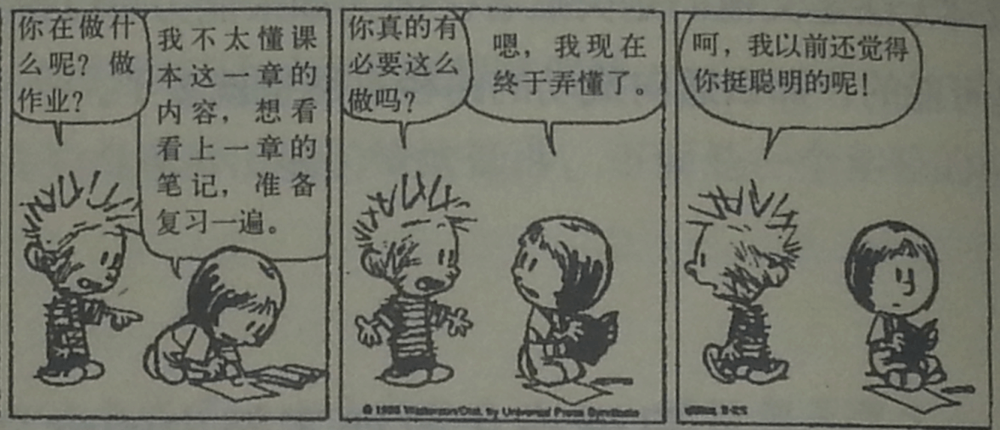

我们看一下这个小漫画 很努力等于不聪明吗？

大家体会一下，在传统观念中孩子或者我们会将努力跟聪明相对立。
僵固的思维模式还具有一些特点：就像德韦克研究中被表扬的孩子维护自己的自尊一样，他们想要证明自己是很优秀的，当自己超过别人的时候就很得意，很爱跟别人比。但是当他碰到与自己旗鼓相当或者比自己强大的对手时，他就会感觉很受挫，甚至会以后都不敢参加比赛，因为他害怕自己以比赛就会露馅，暴露他没有那么好。
在登山协会中有些家长分享说，有些孩子可能在班里是班干部，或者是在一些户外活动中参加一些选拔，如果孩子选上了，当然会开心，但是如果没有选上，家长的第一反应就是保护孩子的自信心不受损伤，在学校可能会去找老师希望老师给他们做这个班干部，在青少年活动中心希望教练给予支持保护孩子的自信心。当然我们都能理解，但是看过前面的一些研究我们知道，如果我们总是想要保护孩子，给他某种荣誉足够称赞，而不是提高他的能力，那么他会变得越来越脆弱，越来越不敢真正的参与竞争，而更多地依赖于别人给他的照顾。长远来看对他发展更为不利。很多孩子还在小学，还可以帮他塑造出更好的自信心。
自信也并不是越高越好，自信若是很高但是很脆弱的话，有时候会比自信中等稳定还要危险的多，因为自信中等很稳定的话，孩子知道通过努力提高自己努力，但是如果自信很高但是是靠周围人的维护的话，这样他以后的抗挫折能力堪忧。对自信心的研究，最佳的自信当然是既高又稳定的。
我们从前面研究可知，孩子为了维护自己的自尊或是还不错的形象他还会撒谎，大家知道不知道有些平时成绩很好经常受夸奖的孩子，如果又一次他没有考好，他还会自己改卷子，会把成绩改一下，为了维护自己在家长前的面子，我们大家应该都可以理解。所以我们不要给超过他能力的表扬，一定要给他努力相对应的表扬。如果他做好了，我们说他，你努力了，所以这次表现不错，如果他没做好，我们也要像做体操的小孩父母一样，告诉他，你可能还不如别人努力，你可以下次通过努力提高自己就好了。
我们还经常遇到小孩子，遇到自己擅长的就很爱参加，遇到自己不擅长就不参加，因为没有参与，就没有失败，因为他承受不起失败。因为我们这一代人的孩子受到来自爷爷奶奶还有亲戚朋友的表扬太多了，甚至幼儿园老师受到一些错误观念的影响，都经常说你最棒，你最好，你最有才华。这是很让人担心的。另外大家可以想一下，刘翔在两次奥运赛中弃赛特别实在决赛的时候，到底是什么原因我们不知道，但是不是也有可能是他承受不起在全国人民面前失败呢？这也是一种非常大的可能。我们心理学把这个称为自我妨碍现象，就是为了保护自己的自尊心，不惜放弃竞争、挑战。因为不参与竞争就不会失败，这是一种看似最好的维护自我价值的方法。但是如果大家的孩子碰到很多很多的竞争都采用这种态度的话，我实在为孩子觉得很惋惜。因为什么呢？因为你才刚刚有机会尝试你就放弃，那么你的人生要放弃多少的机会，丧失多少可能。我希望大家改变过来，要把称赞都换成鼓励，把他付出的努力跟他取得的成绩相联系，而不要单纯的称赞他聪明有才华，这个可能会害了他。